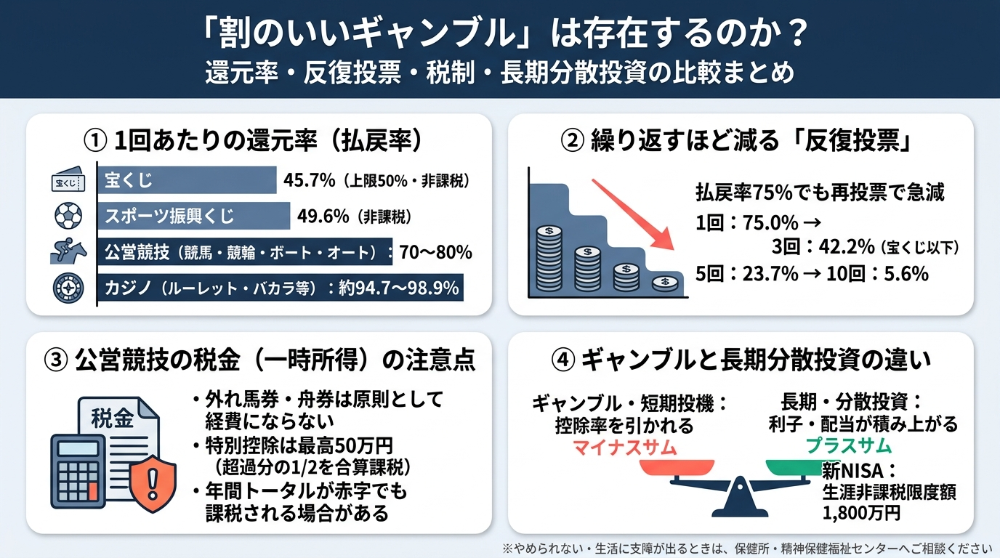

「割のいいギャンブル」は存在するのか？：還元率・期待値・税制から見る真実
宝くじ（45.7%）、スポーツ振興くじ（49.6%）、公営競技（70〜80%）、カジノの1回あたりの還元率と控除率、反復投票による期待残存率の急激な低下（3回で42.2%・5回で約23.7%・10回で約5.6%）、公営競技の一時所得課税（外れ馬券問題）と長期分散投資（新NISA等）の違い、およびギャンブル等依存症の公的相談窓口を1枚にまとめた図解です。

宝くじ（45.7%）、スポーツ振興くじ（49.6%）、公営競技（70〜80%）、カジノの1回あたりの還元率と控除率、反復投票による期待残存率の急激な低下（3回で42.2%・5回で約23.7%・10回で約5.6%）、公営競技の一時所得課税（外れ馬券問題）と長期分散投資（新NISA等）の違い、およびギャンブル等依存症の公的相談窓口を1枚にまとめた図解です。
